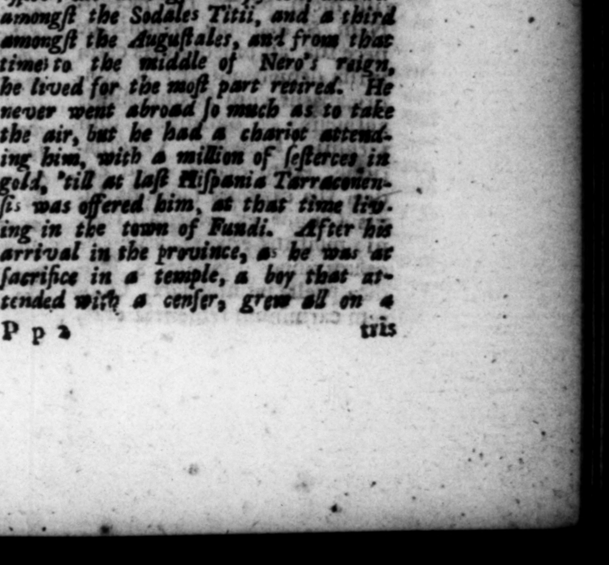

2 r TOS Wo | os * OY — 8 R. $SUEPICIUS'GA 7. Cede Can nnnctiara, . the news lanti uletem prætulit. Per hoc graciflinus jo, que iu cohorrem amicorum, tautæ dignationls eft bita ei vagravis incidiſſer, dilatus fit expeditionis Bricannice dies. Africam 2 © 3 z 2 Z = 7 nandam vinciam, & inteſtina dillenſione & barbarorum tumultu inquieram. Ordinavitque magna ſeveritatis ac juſtice Cura stiam, in parvolis rebus, Militi, qui per expeditionem annona arc- . tiſſima reſiduum cibartoram an rricici modium centum do- 722 | = 2 © And * which was all be had le, for 4 bun. ab Capie, nao. od denarii, he had him 14 by, 76 = & 1 ae EXta- lieved by any 1 he came t \ 2 At in jure dicendo, Was ac cum de propriecace ——. qz:ererur, levibus utrin entis, & teltabus, acleoque difficili conjeQtura veritalis, ira decreVaty ut ad lacum, ubi adaquari folebat, ducereur capite involnto, atque ibidem revelato, ejus eller, ad quem ſponte ie à potu recepiſlet. * 8. Ob res, & tunc in Afria, & olim in Germania geltas, ornamenta triumphala accepir, & ſacerdotium triplex, inter xv viros, ſoda-£ 2 = jy S of v And be did ſe:tle it with ch win _ even in_Jmall leſque Tirios, item Auguſtales, 2 ales Titii, 4 third „ — 5 atque 48 tem- ng the 2 ant from ib pore prope ad medium Nero- e the Wt of Nero't ralen, nis principatum in fecelly part” revered. | plurimum vixit: ne ad gel- o much as to take tandum quidem u mquam iter ir, but he had 4 c attend. ingreſſus, quam ut ſecum ve- with 4 million of (eſterces, in hiculo proxime decies HS. in s Terran. . . tine Tits auro efferret, donec in qppido Pundis moranti Hi pania Tarraconenſis oblata eſt. Acciditque, ut, cum provinciam | ingrellus ſacrificaret intra - ö publicam, puero & miniſ- Þ p » : * 12 FT! 125
